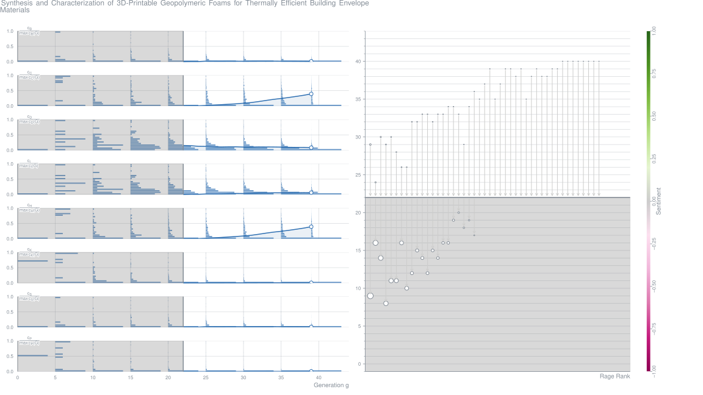
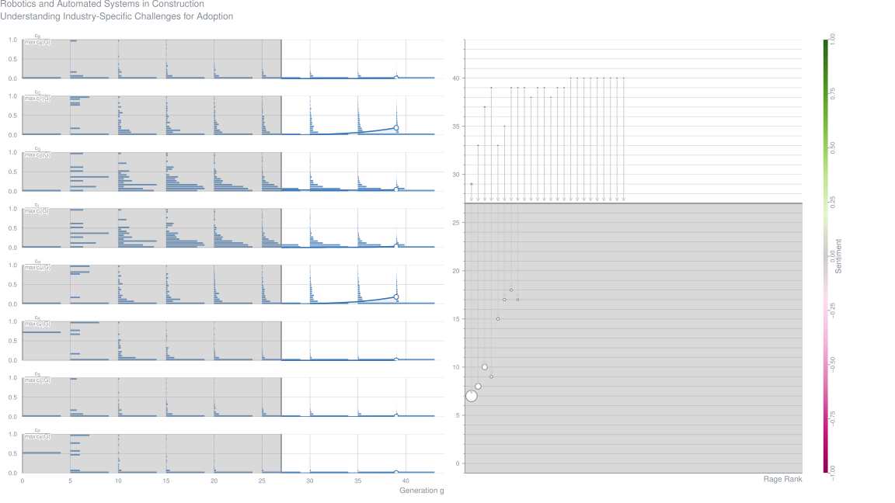
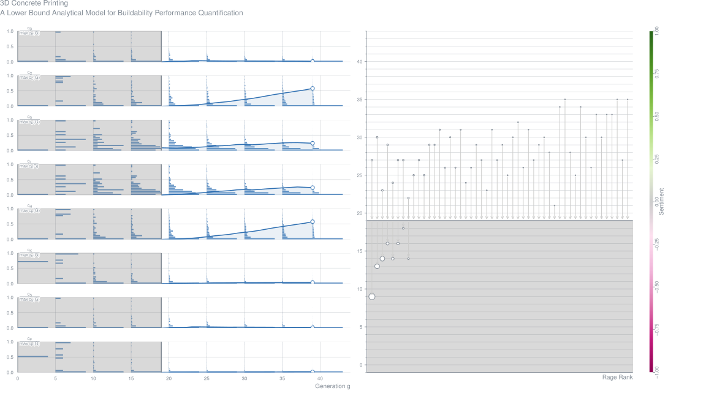
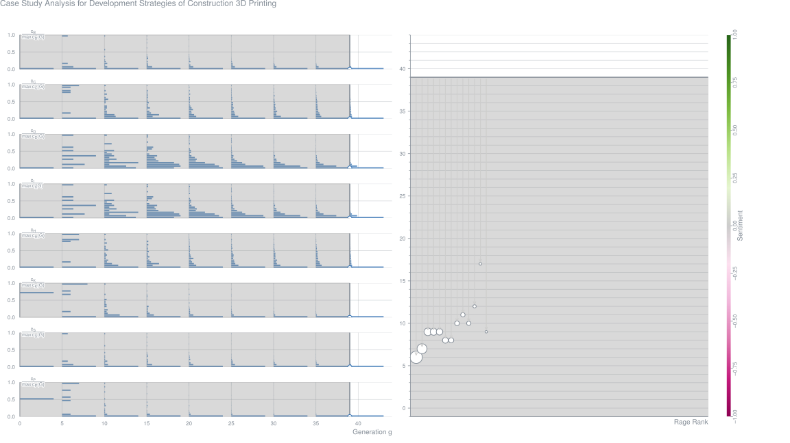
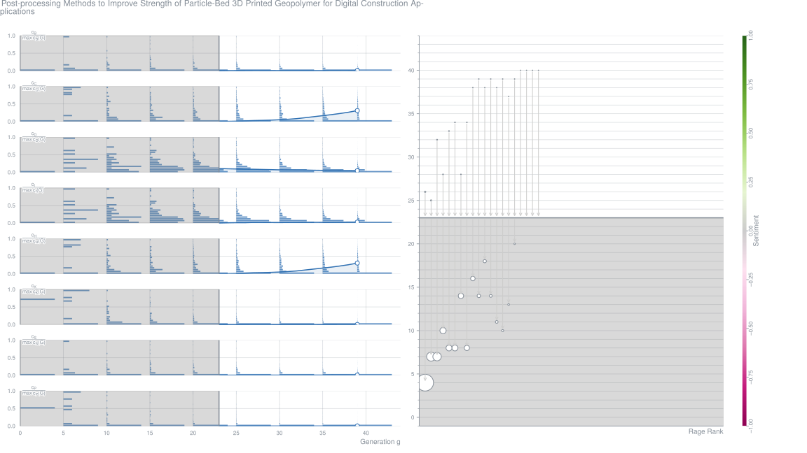
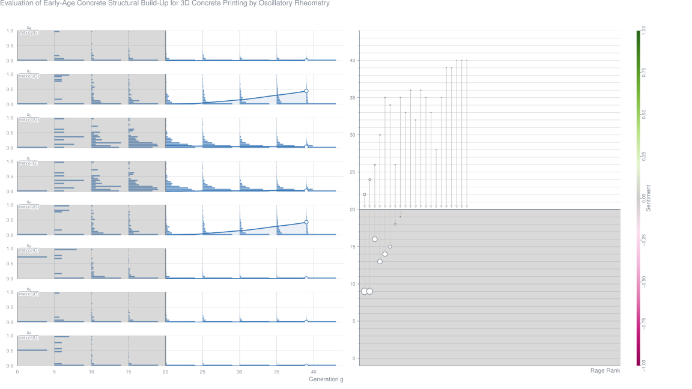
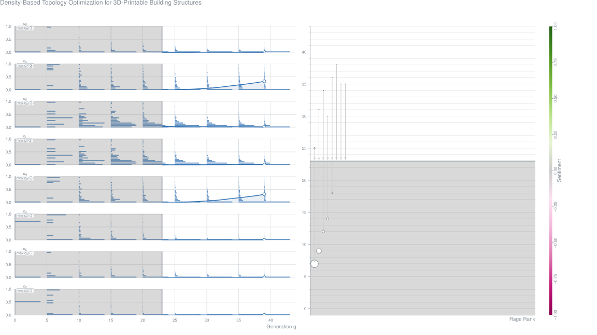
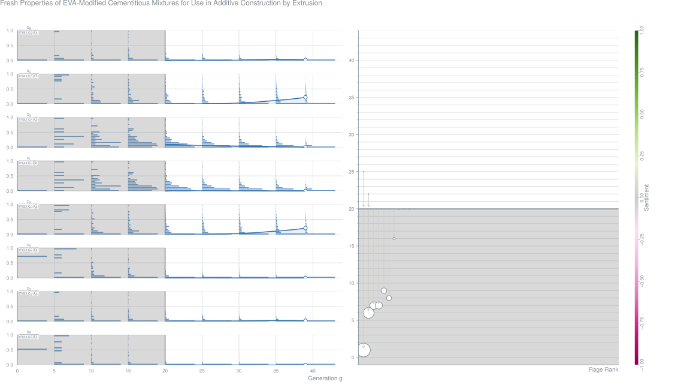
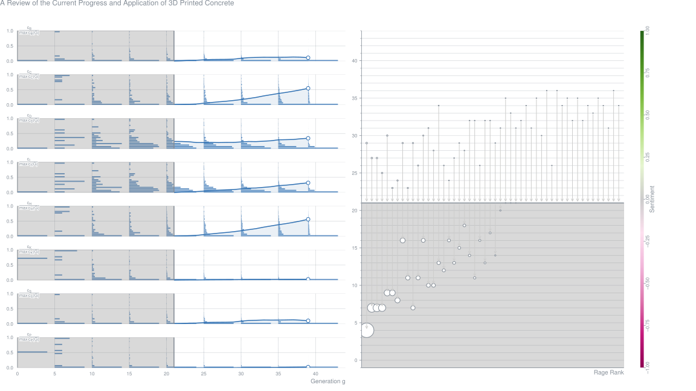
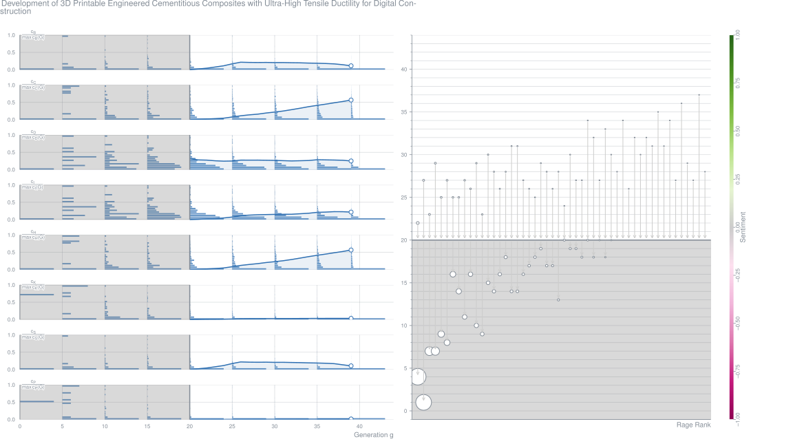

AbstractSynthesis and characterization of 3D-printable foamed fly ash-based geopolymer matrices for thermal insulation is the focus of this paper. A surfactant-based foaming process, multi-step mixing that ensures foam jamming transition and thus a dry foam, and microstructural packing to ensure adequate skeletal density are implemented to develop foamed suspensions amenable to 3D-printing. The foamed suspensions show lower yield stress with increasing surfactant contents, especially above the foam jamming transition. The mixtures demonstrate adequate extrudability, shape retention, and buildability. The geopolymeric foams show porosities ranging from 55 to 75% and bulk densities from 0.6 to 1.0 g/cm3, and these properties are similar irrespective of whether the mixtures are extruded or conventionally cast. The thermal conductivities of the foamed matrices range from 0.15 to 0.25 W/m-K. It is shown that designed architectures that minimize heat transfer can be printed using foamed matrices to obtain sandwich wall panels with thermal insulation properties comparable to or better than those of currently available insulated concrete wall panels. This positions 3D-printing as a strategy to develop composite systems with previously unattainable thermal performance.Metrics
Robotics and Automated Systems in Construction: Understanding Industry-Specific Challenges for Adoption (2019-07)
Juan Davila Delgado,
Lukumon Oyedele,
Anuoluwapo Ajayi,
Lukman Akanbi,
Olugbenga Akinade,
Muhammad Bilal,
Hakeem Owolabi Journal Article – Journal of Building Engineering, Vol. 26
AbstractThe construction industry is a major economic sector, but it is plagued with inefficiencies and low productivity. Robotics and automated systems have the potential to address these shortcomings; however, the level of adoption in the construction industry is very low. This paper presents an investigation into the industry-specific factors that limit the adoption in the construction industry. A mixed research method was employed combining literature review, qualitative and quantitative data collection and analysis. Three focus groups with 28 experts and an online questionnaire were conducted. Principal component and correlation analyses were conducted to group the identified factors and find hidden correlations. The main identified challenges were grouped into four categories and ranked in order of importance: contractor-side economic factors, client-side economic factors, technical and work-culture factors, and weak business case factors. No strong correlation was found among factors. This study will help stakeholders to understand the main industry-specific factors limiting the adoption of robotics and automated systems in the construction industry. The presented findings will support stakeholders to devise mitigation strategies.Metrics
3D Concrete Printing: A Lower-Bound Analytical Model for Buildability-Performance-Quantification (2019-07)
AbstractConcrete structures are 3D printed in the plastic state, therefore emphasis should be placed on the rheological characterisation of these materials to ensure that they are appropriate for 3D printing as well as for quality control. In this research, an analytical model based on the novel rheological characterisation of a material is presented as a method for quantifying the buildability performance of a 3D printable concrete/mortar. Structural instability of a freshly printed object e.g. elastic buckling is not accounted for as this model is only based on physical nonlinearity, in particular plastic yielding. The failure mechanism is based on the Mohr-Coulomb failure criterion, and incorporates Tresca and Rankine limit functions, dependent on the degree of confinement. The model is considered a lower bound theorem as stress redistribution occurs in the printed filament layers. The model is verified via an experimental study that yields a conservative error of<10%.Metrics
An Ab-Inito Approach for Thixotropy Characterisation of Nano-Particle-Infused 3D Printable Concrete (2019-07)
Jacques Kruger,
Stephan Zeranka,
Gideon van Zijl Journal Article – Construction and Building Materials, Vol. 224, pp. 372-386
AbstractThis paper presents a novel rheological thixotropy model that specifically appertains to the characterisation of materials that are suitable for 3D printing of concrete (3DPC). The model accounts for both physical and chemical influences on a material’s microstructure, denoted by Rthix (re-flocculation) and Athix (structuration) respectively. Rheological analyses are performed on a reference material with varying superplasticizer (SP) and nano-silica (nS) dosages in order to determine their effects on the aforementioned parameters. Specific focus is placed on the re-flocculation thixotropy mechanism. The advantages of adding nanoparticles to concrete for 3DPC is practically validated by printing circular hollow columns until failure occurs. The result is supported by the thixotropy model, which is applied to the materials that are used for the 3DPC tests. It is concluded that, for this study, Rthix is a better measure of thixotropy behaviour that is suitable for 3DPC than Athix
Material-Design and Performance-Evaluation of Foam-Concrete for Digital Fabrication (2019-07)
AbstractThree-dimensional (3D) printing with foam concrete, which is known for its distinct physical and mechanical properties, has not yet been purposefully investigated. The article at hand presents a methodological approach for the mixture design of 3D-printable foam concretes and a systematic investigation of the potential application of this type of material in digital construction. Three different foam concrete compositions with water-to-binder ratios between 0.33-0.36 and densities of 1100 to 1580 kg/m³ in the fresh state were produced with a prefoaming technique using a protein-based foaming agent. Based on the fresh-state tests, including 3D printing as such, an optimum composition was identified, and its compressive and flexural strengths were characterized. The printable foam concrete showed low thermal conductivity and relatively high compressive strengths of above 10 MPa; therefore, it fulfilled the requirements for building materials used for load-bearing wall elements in multi-story houses. Thus, it is suitable for 3D-printing applications, while fulfilling both load-carrying and insulating functions.Metrics
Case-Study-Analysis for Development-Strategies of Construction 3D Printing (2019-07)
Xiangcheng Meng,
Xueqing Zhang Contribution – Proceedings of the 2019 International Conference on Additive Manufacturing, Modeling Systems and 3D Prototyping
AbstractAt present, the application of 3D printing technology in the construction industry is still in its early stages. As such, several problems occur when using construction 3D printing techniques, such as the limitation of printer size and lack of printing materials. Therefore, research on construction 3D printing is becoming a trend because it marks the continuous progress of civil engineering toward automation and modernization. This study aims to analyze the application of 3D printing technology in the construction industry and explore development strategies for popularizing construction 3D printing. A critical literature review was provided as a clear introduction of background information and transition of the developing process. Practical cases were compared to identify the main characteristics of this particular technology. Consequently, development prospects were investigated by external and internal factor analyses using expert grading method. Finally, with the help of SWOT analysis, development strategies of 3D printing in the construction industry were put forward.Metrics
Post-processing Methods to Improve Strength of Particle-Bed 3D Printed Geopolymer for Digital Construction Applications (2019-07)
AbstractThe strength of powder-based 3D printed geopolymer samples immediately after the de-powdering process (“green” strength) is inherently very low. Therefore, different post-processing techniques have been explored in the previous study of the authors to enhance the “green” strength of the printed geopolymer. The highest strength of around 30 MPa was achieved for the printed slag-based geopolymer sample cured in an alkaline solution for 7 days at 60°C. Although this strength is sufficient for a wide range of construction applications, the necessity for the heat curing procedure, which requires a significant amount of energy, can compromise the sustainability credentials of the developed powder-based 3D printed geopolymer and limit its commercial viability and large-scale applications in the construction industry. To tackle this issue, this study aims to develop a new post-processing method which eliminates the necessity for the heat curing. The influences of type of curing medium, duration and temperature of curing, and testing direction on the compressive strength of the printed geopolymer were investigated. The “green” printed geopolymer samples were immersed in four different curing mediums, including two sodium (Na)-based, and two potassium (K)-based activators with different alkali modulus (SiO2/M2O where M = Na or K), and cured at two different curing temperatures (ambient temperature (23°C) vs. 60°C) for 7 and 28 days. The compressive strength of the “post-processed” printed geopolymer specimens was measured in two different testing directions, namely the binder jetting direction and layer stacking direction. The results showed that the 28-day compressive strength of the ambient temperature cured printed geopolymer sample was comparable to the 7-day compressive strength of the corresponding heat cured sample. Therefore, the feasibility of enhancing the strength of printed geopolymer by curing in an alkaline solution at ambient temperature was established. This developed post-processing method based on the ambient temperature curing is more viable and less energy-intensive, yet provides comparable strength, as compared to the previously developed post-processing method based on the heat curing. The results also showed that the strength of the printed geopolymer samples cured in the K-based activators was lower than that of the specimens cured in the Na-based activators.Metrics
The Effect of Material Fresh Properties and Process Parameters on Buildability and Inter-Layer Adhesion of 3D Printed Concrete (2019-07)
AbstractThe advent of digital concrete fabrication calls for advancing our understanding of the interaction of 3D printing with material rheology and print parameters, in addition to developing new measurement and control techniques. Thixotropy is the main challenge associated with printable material, which offers high yield strength and low viscosity. The higher the thixotropy, the better the shape stability and the higher buildability. However, exceeding a minimum value of thixotropy can cause high extrusion pressure and poor interface bond strength if the printing parameters are not optimized to the part design. This paper aims to investigate the effects of both material and process parameters on the buildability and inter-layer adhesion properties of 3D printed cementitious materials, produced with different thixotropy and print head standoff distances. Nano particles are used to increase the thixotropy and, in this context, a lower standoff distance is found to be useful for improving the bond strength. The low viscosity "control" sample is unaffected by the variation in standoff distances, which is attributed to its flowability and low yield stress characteristics that lead to strong interfacial bonding. This is supported by our microscopic observations.
Surface-Modification as a Technique to Improve Inter-Layer Bonding Strength in 3D Printed Cementitious Materials (2019-07)
AbstractThe structural capacity of 3D printed components mainly depends on the inter‐layer bonding strength between the different layers. This bond strength is affected by many parameters (e.g. moisture content of the substrate, time gap, surface roughness,..) and any mismatch in properties of the cementitious material may lead to early failure. A common technique to improve inter‐layer bonding strength between a substrate and a newly added layer is modifying the substrate surface. For the purpose of this research, a custom‐made 3D printing apparatus is used to simulate the printing process and layered specimens with a different delay time (0 and 30 minutes) are manufactured with different surface modification techniques (wire brushing, addition of sand or cement and moisturizing substrate layer). The surface roughness was measured and the effect of the modification technique on the inter‐layer‐bonding strength was investigated. Results showed that the most effective way to increase the inter‐layer bonding is increasing the surface roughness by a comb. This creates a kind of interlock system that will provide a higher inter‐layer strength. The compressive strength is most influenced by the addition of cement, where the changing W/C‐ratio will create a higher degree of hydration and consequently a higher strength.Metrics
Thixotropy and Interfacial Bond Strengths of Polymer-Modified Printed Mortars (2019-07)
Fatima El Sakka,
Joseph Assaad,
Farook Hamzeh,
Charbel Nakhoul Journal Article – Materials and Structures, Vol. 52, No. 4
Abstract3D concrete printing is an emerging construction technique for building structures layer-by-layer based on digital computer models without the need of formwork. The monitoring of interlayer bonding is crucial to ensure durability and structural integrity. This investigation aims at proposing a new methodology to assess the concurrent effects of material structural build-up (thixotropy), time gap between successive filaments, and incorporation of styrene-butadiene rubber (SBR) polymers on bond strengths of deposited layers. Four mortar series prepared with 450–750 kg/m3 binder and effective water-to-binder ratio of 0.35–0.55 are tested; the resulting thixotropy rate ranged from 0.16 to 1.1 Pa/s. Results showed that mixtures exhibiting moderate thixotropy levels (i.e., about 0.48–0.64 Pa/s) yielded the best performance regarding interfacial bonding. The incorporation of SBR proved efficient to enhance the bond strength as well as attenuate its rate of drop over the time gap between successive layers. This was related to the polymer films that coalesce in the cementitious system, thus binding the cement hydrates together and causing increased tensile strength properties. The bond strengths recorded on specimens exposed to hot temperature of 45 °C were consistently lower than those determined in standard curing conditions. The methodology proposed was successfully validated using 3D laboratory printing machine.Metrics
Evaluation of Early-Age Concrete Structural Build-Up for 3D Concrete Printing by Oscillatory Rheometry (2019-07)
Wilson da Silva,
Hervé Fryda,
Jean-Noël Bousseau,
Pierre-Antoine Andreani,
Thomas Andersen,
Wilson da Silva,
Thomas Andersen Contribution – Proceedings of the 2019 International Conference on Additive Manufacturing, Modeling Systems and 3D Prototyping
AbstractThis paper addresses the material buildability challenge in extrusionbased 3D Concrete Printing (3DCP) applications, since this is paramount to increase production rates of vertical elements such as columns. We utilized oscillatory rheology to determine the early-age structural build-up curves of 3DCP mixes comprising White Ordinary Portland Cement (OPC), Calcium Aluminate Cement (CAC), limestone filler, sand, viscosity modifying agent, retarder, and a plasticizer. Such curves served as basis to verify whether a geometry is printable, allowing for tuning the printing process parameters. The material characterization approach is validated through a case study, in which a column was designed – defining the structural build-up requirements – and printed using a robot-based 3DCP at a 0.68 m/h vertical build rate. Such case study and lessons thereof provide valuable insights into the link between design, material properties and 3DCP process parameters, setting the basis for a comprehensive study on the early-age structural build-up measurements to support 3DCP mix design.Metrics
Density-Based Topology-Optimization for 3D Printable Building Structures (2019-07)
AbstractThis paper presents the study of a new penalty method for density-based topology optimization. The focus is on 3D-printable building structures with optimized stiffness and thermal insulation properties. The first part ofthe paper investigates the homogenized properties of3D-printed infill patterns and in the second part a new penalty method is proposed and demonstrated. The method presents an alternative way to implement multi-material topology optimization without increasing computational cost. A single interpolation function is created, based on the homogenized properties ofa triangular infill pattern. The design variables are linked to the different possible infill densities of the pattern. A high density represents a solid structure with high stiffness, but weak thermal properties, while an intermediate density provides the structure with good insulation qualities. On the other hand, when the air cavities become too large (i.e., low infill densities), the heat flow by convection and radiation again decreases the thermal performances of the material. The optimization study is performed using the GCMMA algorithm combined with a weighted-sum dual objective. One part of the equation aims to maximize stiffness, while the other attempts to minimize the thermal transmittance. Different case studies are presented to demonstrate the effectiveness of this multi-physics optimization strategy. Results show a series ofoptimized topologies with a perfect trade-off between structural and thermal efficiency.Metrics
Fresh Properties of EVA-Modified Cementitious Mixtures for Use in Additive Construction by Extrusion (2019-07)
Kyu-Seok Yeon,
Kwan Kim,
Jaeheum Yeon,
Hee Lee Journal Article – Materials, Vol. 12, No. 14
AbstractIn this study, the fresh properties of ethylene-vinyl acetate (EVA)-modified cementitious mixtures were experimentally investigated to evaluate the feasibility of this type of material being used in additive construction by extrusion (ACE). The EVA/cement ratio was a main variable to determine the properties, including flowability, extrudability, buildability, and open time. According to the flow test results, the optimized flow of the EVA-modified cementitious mixtures was found to be 65% for buildability. This excellent flowability could be achieved because the flow increased as the EVA/cement ratio increased; conversely, the extrudability was slightly reduced when the EVA/cement ratio increased. However, if the flow of the EVA-modified cementitious mixtures was maintained at 65%, ACE could be achieved without significant issues. In addition, the height of the additive concrete walls created was not substantially reduced after printing of these mixtures, even though different EVA/cement ratios were applied. Plus, ACE can be operated longer with such mixtures because the open time becomes longer as the EVA/cement ratio increases. In summary, the results clearly demonstrated that EVA-modified cementitious mixtures were feasible for use as ACE materials.Metrics
A Review of the Current Progress and Application of 3D Printed Concrete (2019-07)
Jingchuan Zhang,
Jialiang Wang,
Sufen Dong,
Xun Yu,
Baoguo Han Journal Article – Composites Part A: Applied Science and Manufacturing, Vol. 125
AbstractAdditive manufacturing, also known as three-dimension printing (3DP), has the advantages of high building efficient, low labor cost and less construction wastes compared to traditional construction technology. 3D printed concrete is a special type of concrete, which can be deposited through a 3D printer layer by layer without any formwork support and vibration process. Its important performance indexes, including workability, setting and hardening time, and mechanical properties, can be optimized by materials selection and printing parameters. To date, many building structures have been successfully printed using 3D printed concrete technology, some of which have even achieved its real applications. The 3D printed concrete has a great potential on practical applications, such as the affordable housing construction in low-income countries, military bunkers when the soldiers fighting in the wild, and complex constructions where the formwork is difficult to manufacture. In order to comprehensively introduce 3D printed concrete, this paper reviews the progress of 3D printed concrete in terms of workability, mechanical properties and building plan design. In addition, the current applications and further developments of 3D printed concrete are also discussed.Metrics
Development of 3D Printable Engineered Cementitious Composites with Ultra-High Tensile Ductility for Digital Construction (2019-07)
AbstractThe current 3D concrete printing (3DCP) technology is limited by the reinforcingmethods. Conventional steel reinforcement is hard to be incorporated in the 3DCP process. To overcome this limitation, this study aims to develop 3D-printable engineered cementitious composites (ECCs) exhibiting ultra-high tensile strain capacity of more than 8%, which can be used for digital construction of ‘self-reinforced’ concrete structures, reducing the reliance on the conventional steel reinforcement. Different volume fractions of polyethylene fibers (1%, 1.5% and 2%) were used to reinforce the ECCmatrix. The fresh properties (including theworkability, rheological properties and buildability) and thehardened properties (including the compressive and flexural strengths, and the uniaxial tensile performance), alongwith the microstructure ofthe developed 3D printable ECCs were experimentally investigated. Conventionally mold-cast ECCs were also prepared and tested for comparison purposes. The results showed that the developed 3D printable PE-ECCs exhibited strong strain-hardening behavior with the tensile strength and tensile strain capacity of up to 5.7 MPa and 11.4%, respectively. In addition, the results showed that the 3D printed PE-ECCs exhibited superior tensile performance to the conventionally mold-cast PE-ECC counterparts. This finding is in good agreement with the results of the microstructural analysis.Metrics